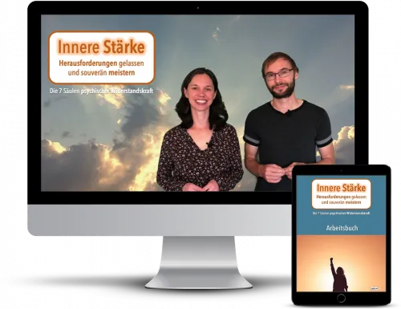
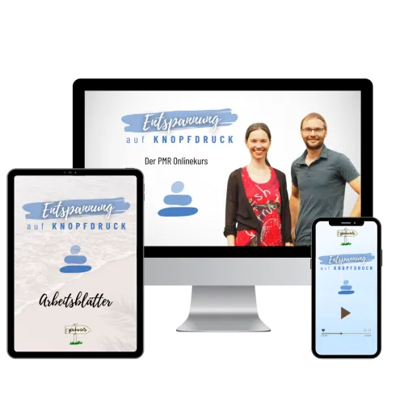

Gesundheit beginnt im Kopf - §20 Präventionskurs
Produktprofil · Marktplatz-Daten 2026-10-14 · Verkaufsseiten-Recherche 2026-10-14 · Kategorien: Personal Development, Education
- Gesundheit beginnt im Kopf - §20 Präventionskurs ist ein/e Mitgliederbereich & Videokurs in Personal Development und Education, vertrieben über den Digistore24-Marktplatz von Anbieter glueckwaerts, gelistet seit 2026-09-22.
- Listenpreis $140.08 (single payment) — Checkout, Auslieferung und Rückerstattungen laufen über Digistore24 selbst, nicht über den Anbieter.
- Käuferschutz: keine standardisierte Garantie-Formulierung gefunden — Rückerstattungsbedingungen vor der Zahlung auf der offiziellen Seite prüfen.
Interesse an Gesundheit beginnt im Kopf - §20 Präventionskurs? Aktueller Preis, Boni und Garantiebedingungen finden Sie auf der offiziellen Seite des Anbieters:
Offizielle Verkaufsseite ansehen
Affiliate-Link (Werbung) — wir verdienen ggf. eine Provision, ohne Mehrkosten für Sie.
Marktplatz-Daten
| Produkttyp | Mitgliederbereich & Videokurs |
|---|---|
| Preis | $140.08 (Single payment) |
| Garantie/Rückgabe | Laut Verkaufsseite des Anbieters — vor dem Kauf auf der offiziellen Seite prüfen |
| Anbieter | glueckwaerts (gelistet seit 2026-09-22) |
Marktplatz-Beschreibung des Anbieters
Empfehle unseren zertifizierten Gesundheitskurs Mit unserem Onlinekurs „Gesundheit beginnt im Kopf“ hilfst du Menschen mit hoher Stressbelastung ihre Gesundheit an der Wurzel zu stärken – und erhältst für jede erfolgreiche Buchung eine attraktive Provision. Deine Vorteile: Attraktive Provision: 40 % pro Verkauf Hohe Qualität: Zertifizierter §20 Präventionskurs Hohe Kaufbereitschaft: Die Krankenkassen erstatten 80-100% der Kursgebühr Fertige Werbemittel: erhalte fertige Texte, Bilder und Videos Über unseren Onlinekurs ✔️ 8 aufeinander aufgebaute Wochenmodule: Sie leiten dich Schritt für Schritt durch den Prozess – leicht verständlich und gut machbar. ✔️ Inspirierende Lehrvideos ✔️ Natur - Audioanleitungen zum Download ✔️ Arbeitsbuch zur Reflexion inkl. Erfolgstagebuch: Halte deine Fortschritte fest, erkenne Muster – und bleibe motiviert. ✔️ 100 % Kostenerstattung: Deine Krankenkasse übernimmt den Großteil Infovideo zum Kurs
Von der Verkaufsseite des Anbieters
Seitentitel: Gesundheit beginnt im Kopf - der zertifizierte Onlinekurs für ein stimmiges und gesundes Leben
Meta-Beschreibung: Stressresilient Leben dank Kohärenz und Natur - für Menschen, die viel leisten - und wieder mehr sie selbst sein wollen.
Hauptüberschrift
Gesundheit beginnt im Kopf - Stressresilient leben dank Kohärenz & Natur
Der zertifizierte Onlinekurs für ein gesundes und stimmiges Leben (bis zu 100 % Krankenkassenzuschuss - Kurs-ID: KU-ST-IT5SSH)
Manchmal spürst du:
Abschnitts-Überschriften
- Stressresilienz - für eine klaren Kopf
- Naturverbindung - dein natürlicher Regulator
- Kohärenzgefühl - für ein stimmiges Leben
- Innere Ruhe statt ständiger Anspannung
- Bewusstheit statt Autopilot
- Klarheit statt Gedankenkreisen
- Selbstwirksamkeit statt Ohnmacht
- Ein glasklarer Weg
- Direkter Austausch
- Wertvolles Wissen
Einstiegstext
Und egal, wie sehr du dich anstrengst oder organisierst - innerlich bleibt es unruhig .
Mit denen Menschen trotz vieler Belastungen gesünder, stabiler und gelassener bleiben.
Du lernst, dein Nervensystem zu beruhigen, Energie bewusst zu managen, Grenzen zu setzen und Grübelgedanken zu regulieren.
Schon wenige Minuten draußen können dein Nervensystem spürbar entlasten. Du lernst, diese Kraft bewusst zu nutzen - als Ort für Ruhe, Perspektive und inneres Auftanken.
Recherche-Methode: rohes HTML · 1736 Wörter · Qualität: rich · recherchiert am 2026-10-14. Vollständige Recherche-Datei (MD) ↗
Anwendung — laut Anbieter
Im diesem Onlinekurs begleite ich dich acht Wochen lang dabei, diese drei Gesundheits-Schlüssel in dein Leben zu integrieren – mit kleinen, machbaren Schritten, die wirklich Wirkung zeigen.
Es ist eine 8‑wöchige Reise zurück zu dir – in kleinen Schritten, die sich gut anfühlen. Mit sanfter Orientierung und Methoden , die wissenschaftlich fundiert sind und im echten Alltag funktionieren .
8 aufeinander aufgebaute Wochen-module, die dich Schritt für Schritt durch deine Veränderung begleiten.
Weitere Bilder (von der Verkaufsseite des Anbieters)
Bilder stammen von der offiziellen Verkaufsseite des Anbieters und zeigen das Produkt, wie es beworben wird.
Gut zu wissen
- Keine Garantie-Formulierung in unserer Recherche gefunden — bestätigen Sie das Rückgabefenster auf der offiziellen Seite, bevor Sie kaufen.
- Hinweise der Verkaufsseite (wörtlich, nicht von uns geprüft): „Du erforschst deine Werte & inneren Bedürfnisse und erkennst, was dir wirklich wichtig ist. "
Was ist Gesundheit beginnt im Kopf - §20 Präventionskurs?
Gesundheit beginnt im Kopf - §20 Präventionskurs ist ein/e mitgliederbereich & videokurs in der Kategorie Persönlichkeitsentwicklung des Digistore24-Marktplatzes, veröffentlicht von Anbieter glueckwaerts und im Verkauf seit 2026-09-22. Der Anbieter beschreibt es so: "Empfehle unseren zertifizierten Gesundheitskurs Mit unserem Onlinekurs „Gesundheit beginnt im Kopf“ hilfst du Menschen mit hoher Stressbelastung ihre Gesundheit an der Wurzel zu stärken – und erhältst für jede erfolgreiche Buchung eine attraktive Provision. D" (Marktplatz-Beschreibung des Anbieters, leicht gekürzt).
Gesundheit beginnt im Kopf - §20 Präventionskurs Preis: was Sie zahlen
Der Marktplatz listet Gesundheit beginnt im Kopf - §20 Präventionskurs zum $140.08 Preis (single payment). Digistore24 fügt im Checkout die gesetzliche Steuer Ihres Landes hinzu — dort sehen Sie den Endbetrag vor der Zahlung. Eine separate Plattformgebühr gibt es nicht; Anbieter können eigene Upsells nach dem Checkout anbieten.
Gesundheit beginnt im Kopf - §20 Präventionskurs Rückerstattung und Geld-zurück-Garantie
Wir haben keine standardisierte Garantie-Formulierung auf der Verkaufsseite gefunden. Rückerstattungen für Digistore24-Käufe laufen über die Plattform: Antrag über den Support-Link in Ihrer Bestell-E-Mail, innerhalb des Garantiezeitfensters, das im Checkout angezeigt wird. Praktischer Rat: Entscheiden Sie innerhalb des Fensters — wenn das Produkt unter den Erwartungen bleibt, erstatten lassen statt irren lassen.
Mechanik im Detail: So funktionieren Digistore24-Rückerstattungen.
Für wen ist Gesundheit beginnt im Kopf - §20 Präventionskurs geeignet?
Basierend auf der Persönlichkeitsentwicklung-Einordnung und der single payment-Abrechnung richtet sich Gesundheit beginnt im Kopf - §20 Präventionskurs an Käufer, die persönlichkeitsentwicklung-Lösungen suchen und ein Budget für einen Premium-Kauf eingeplant haben. Der ehrliche Test ist nicht die Kategorie, sondern Ihre eigene Situation: Werden Sie es realistisch innerhalb des Garantiefensters nutzen? Wenn ja, ist der Preis eine Investition; wenn nein, ist er Ballast — unabhängig von der Qualität.
Ist Gesundheit beginnt im Kopf - §20 Präventionskurs seriös? Was Sie vor dem Kauf prüfen
Wir bewerten keine Seriosität — das kann niemand, ohne das Produkt zu nutzen. Prüfbare Punkte, alle auf dieser Seite: die Marktplatz-Historie des Anbieters (im Verkauf seit 2026-09-22), die wörtlichen Verkaufsseiten-Auszüge unten (gekennzeichnet als Anbieteraussagen — deren Werbung, nicht unsere Empfehlung), die Garantiebedingungen im Checkout und die Auslieferungsart. Vorsichtsignale bei jedem Angebot: Countdown-Dringlichkeit gepaart mit vagen Rückerstattungsbedingungen, Testimonials ohne Datum und Anbieterseiten, die den Preis bis zum Checkout verstecken.
Wie kommen Sie nach dem Kauf an Gesundheit beginnt im Kopf - §20 Präventionskurs?
Der Checkout läuft über Digistore24. Nach der Zahlung: Videokurse laufen über einen Mitgliederbereich: nach dem Checkout erhalten Sie Zugangsdaten per E-Mail und können die Lektionen in Ihrem eigenen Tempo streamen. Bewahren Sie die Bestell-E-Mail auf — sie ist Ihr Schlüssel zum/d zur mitgliederbereich & videokurs, zu Rückerstattungsanträgen und zum Digistore24-Käufersupport.
Gesundheit beginnt im Kopf - §20 Präventionskurs Erfahrungen: so recherchieren Sie richtig
Die meisten „Erfahrungsberichte" zu Marktplatz-Produkten sind Affiliate-Inhalte — einschließlich Seiten wie dieser, die an Käufen mitverdienen. Behandeln Sie jeden Bericht (auch unseren) als Ausgangspunkt und prüfen Sie gegen Primärquellen: die Verkaufsseite des Anbieters, die Digistore24-Rückerstattungsrichtlinie und — für persönlichkeitsentwicklung — unabhängige Communities außerhalb des Affiliate-Ökosystems. Auf dieser Seite sind die Verkaufsseiten-Auszüge unten wörtlich zitiert, damit Sie die Aussagen des Anbieters bewerten können, ohne wegzuklicken.
Wie Sie Gesundheit beginnt im Kopf - §20 Präventionskurs sicher kaufen
- Öffnen Sie die offizielle Verkaufsseite und lesen Sie das vollständige Angebot.
- Bestätigen Sie Endpreis und Garantiezeitfenster auf der Digistore24-Kassenseite — sie ist bindend, kein Vergleichsportal.
- Zahlen Sie innerhalb des Digistore24-Checkouts (niemals per Überweisung oder Off-Platform-Links).
- Speichern Sie die Bestellbestätigung; notieren Sie die Rückerstattungsfrist im Kalender.
- Prüfen Sie zügig. Der Digistore24-Käufersupport hilft, wenn der Anbieter nicht reagiert.
Vollständiges Recherche-Archiv für dieses Produkt (Markdown: kompletter Marktplatz-Datensatz + wörtliche Verkaufsseiten-Auszüge): Gesundheit beginnt im Kopf - §20 Präventionskurs — vollständiges Datenarchiv (Markdown-Datei: 59557-gesundheit-beginnt-im-kopf-20-pr-ventionskurs.md).
- Listenpreis & Abrechnung — Quelle: offizielle Digistore24-Marktplatz-API, Stand 2026-10-14. Maßgeblich für den aktuellen Preis ist immer die Kassenseite.
- Verkaufsseiten-Zitate — Quelle: https://www.glueckwaerts.com/os-ds, abgerufen 2026-10-14 (Methode: rohes HTML). Verify: offizielle Seite öffnen.
- Garantie / Rückgabe — vom Anbieter festgelegt; vor dem Kauf auf der Verkaufsseite bestätigen.
- Nicht von uns geprüft: Produktqualität, Ergebnisse, Testimonials — kein Praxistest für dieses Listing durchgeführt.
Häufige Fragen zu Gesundheit beginnt im Kopf - §20 Präventionskurs
Antworten aus dem Marktplatz-Snapshot (2026-10-14) und der Verkaufsseiten-Recherche (2026-10-14); Anbieteraussagen sind inline gekennzeichnet.
Was ist Gesundheit beginnt im Kopf - §20 Präventionskurs?
Gesundheit beginnt im Kopf - §20 Präventionskurs ist ein Angebot des Typs „Mitgliederbereich & Videokurs" im Digistore24-Marktplatz, Anbieter: glueckwaerts, gelistet seit 2026-09-22. Eingepflegt unter Persönlichkeitsentwicklung und Bildung. Digistore24 wickelt Checkout, Lieferung und Rückgaben ab.
Wie viel kostet Gesundheit beginnt im Kopf - §20 Präventionskurs?
Der Digistore24-Marktplatz listet es für $140.08 (single payment). Preise legt der Anbieter fest und können sich ändern — der Marktplatz-Eintrag oben zeigt den Schnappschuss; die offizielle Verkaufsseite zeigt den aktuellen Preis.
Gibt es eine Geld-zurück-Garantie für Gesundheit beginnt im Kopf - §20 Präventionskurs?
Unsere Verkaufsseiten-Recherche hat keine explizite Garantie-Formulierung gefunden. Viele Digistore24-Produkte bieten 60 Tage Geld-zurück, aber das legt jeder Anbieter selbst fest — bestätigen Sie es auf der offiziellen Verkaufsseite, bevor Sie kaufen.
Ist Gesundheit beginnt im Kopf - §20 Präventionskurs seriös?
Wir bewerten keine Seriosität — wir veröffentlichen überprüfbare Zahlen: Anbieter glueckwaerts (gelistet seit 2026-09-22), mit der vollständigen Verkaufsseiten-Recherche archiviert auf dieser Seite (Anbieteraussagen als solche gekennzeichnet). Lesen Sie unsere 6-Punkte-Bewertungsmethode und entscheiden Sie anhand der Zahlen — oder diskutieren Sie Gesundheit beginnt im Kopf - §20 Präventionskurs auf GitHub.
Wo kann ich Gesundheit beginnt im Kopf - §20 Präventionskurs sicher kaufen?
Nur über die offizielle Verkaufsseite, die auf dieser Seite verlinkt ist (Checkout und Rückgaben laufen über Digistore24). Prüfen Sie dort Preis und Garantie vor der Bestellung. Der Link ist ein Affiliate-Link — der Kauf unterstützt diese Website ohne Mehrkosten für Sie.
Wie erhalte ich Gesundheit beginnt im Kopf - §20 Präventionskurs nach der Zahlung?
Der Checkout läuft über Digistore24: Nach der Zahlung erhalten Sie Ihren Zugang oder Download per E-Mail und in Ihrem Digistore24-Kundenkonto. Lieferdetails für diesen Produkttyp: Videokurse laufen über einen Mitgliederbereich: nach dem Checkout erhalten Sie Zugangsdaten per E-Mail und können die Lektionen in Ihrem eigenen Tempo streamen. Bei Problemen kann der Digistore24-Käufersupport Ihre Bestellung wiederherstellen.
Alle 50 Käuferfragen zu Persönlichkeitsentwicklung — das komplette Kategorie-FAQ.
Gesundheit beginnt im Kopf - §20 Präventionskurs auf Reddit diskutieren
In Community-Threads vergleichen echte Käufer Erfahrungen. Wir verlinken Communities, keine einzelnen Posts — Threads verschwinden, Subreddits bleiben:
- Reddit-Suche nach „Gesundheit beginnt im Kopf - §20 Präventionskurs" — Live-Ergebnisse, von uns nicht beeinflusst.
- Top-„Erfahrungs"-Treffer dieses Jahr — selbst nach Aktualität filtern.
Passendes auf Amazon.de
Physische Produkte und Zubehör, die häufig zusammen mit Gesundheit beginnt im Kopf - §20 Präventionskurs gekauft werden:
- Personal Development auf Amazon.de — Top-Ergebnisse, Amazon-Ranking.
- Bestseller: Personal Development — live Liste von Amazon, von uns nicht kuratiert.
Werbung: Als Amazon-Partner verdient DigistorePicks DE an qualifizierten Käufen (Partner-tag adminstorede-21). Amazon setzt eigene Preise und Provisionen (niedrige einstellige Prozente — weit unter den 30–75% der Digistore24-Anbieter). Amazon ist ein Convenience-Angebot für Sachprodukte, kein Ersatz für das digitale Produkt oben.
Ähnliche Angebote in Persönlichkeitsentwicklung

Dauer: Laufzeit 24 Wochen / 6 Monate 1:1 Intensiv Coaching / NeuroZen ® Mentoring für DEIN persönliches Ziel 22 x ZoomCalls von ca. 60-90 Minuten 1 Tag VIP-Live

Dauer: Laufzeit 12 Wochen 1:1 Intensiv Coaching / NeuroZen® Mentoring für DEIN persönliches Ziel - 12 x ZoomCalls von ca. 60-90 Minuten - Datenaustausch via Mai

WOLKENWEICH Online-Begleitung - Dein 6-monatiger Premium Zugang - eingebettet, stabil von allen Seiten, geerdet, sicher, geborgen, ruhig Du erhältst einen Premi

MATRIXPRINZIP – High-Ticket-Produkt mit bis zu 820,56€ Provision pro Verkauf! Mindset, emotionale Intelligenz und finanzielle Intelligenz – genau die Fähigkeite
Weitere Angebote von glueckwaerts

1. Hohe Kaufbereitschaft durch Krankenkassenzuschuss Gemäß §20 SGB V erstatten alle gesetzlichen Krankenkassen die Kosten (anteilig je nach Krankenkasse) für di

Empfehle unseren zertifizierten PMR-Präventionskurs Mit unserem Onlinekurs „Entspannung auf Knopfdruck“ hilfst du Menschen mit hoher Stressbelastung – und erhäl
Gesundheit beginnt im Kopf - §20 Präventionskurs ist auch gelistet in
Bildung (597 Produkte)
Ähnliche Preislage in Persönlichkeitsentwicklung

P.A.R.A. Kontrolle – Affiliate-Programm Wir suchen professionelle Affiliates mit Erfahrung im Paid Traffic, die langfristig mit einem klar positionierten digita

Das lukrativste Abo-Produkt auf Digistore Verdiene passives Einkommen durch monatliche Provisionen (30%) Mit der neowake Mitgliedschaft erhalten Mitglieder Zugr

Psychologische Selbstmanagement-Kurse nach dem Blokesch-Modell von Dr. Richard Blokesch für Menschen, die wiederkehrende Denk-, Stress- und Kontrollschleifen be

Affiliate-Partnerprogramm: Onlinekurs „Bevor du JA sagst“ Provision: 50% (99,50€ pro Verkauf) Als Affiliate erhältst du 50% Provision auf jeden vermittelten Ver
Ähnliche Suchanfragen
Wo Sie es sich ansehen können
Wo Sie es sich ansehen können
Aktuelle Preise, Garantie und Boni finden Sie auf der offiziellen Verkaufsseite:
Offizielle Verkaufsseite ansehen
Das ist ein Affiliate-Link (Werbung) — kaufen Sie darüber, verdienen wir ggf. eine Provision, ohne Mehrkosten für Sie.
Quellen & weiterführende Informationen
- Offizielle Verkaufsseite (aktueller Preis, Garantie, Boni): www.glueckwaerts.com/os-ds (Affiliate-Link)
- Öffentliche Digistore24-Produktseite: checkout-ds24.com/product/702652
- Vollständige Recherche-Datei (Markdown, versioniert): content/products/59557-gesundheit-beginnt-im-kopf-20-pr-ventionskurs.md
- Affiliate-Supportseite des Anbieters: www.glueckwaerts.com/affiliate
- Marktplatz-Kategorie: Persönlichkeitsentwicklung
Wie wir Produkte wie Gesundheit beginnt im Kopf - §20 Präventionskurs bewerten
Sechs Prüfungen, ausschließlich mit offiziellen Marktplatz-Zahlen. Die vollständige Bewertungsmethode lesen · unsere Recherche-Standards & Kennzeichnung.
Fragen oder eigene Erfahrungen mit Gesundheit beginnt im Kopf - §20 Präventionskurs?
Praxis-Tests veröffentlichen wir erst, nachdem wir ein Produkt selbst gekauft haben — aber Ihre Erfahrung hilft anderen Lesern: Diskussion zu Gesundheit beginnt im Kopf - §20 Präventionskurs auf GitHub starten/verfolgen. Falsche Zahl gefunden? Korrektur melden — jede Seite zeigt ihre Datenstände, Korrekturen gelten für die ganze Website.